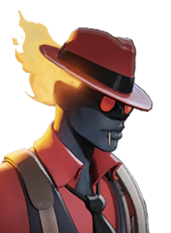
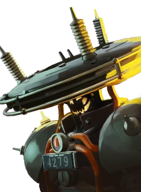
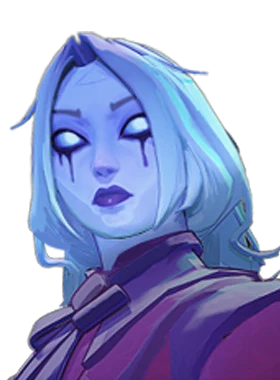
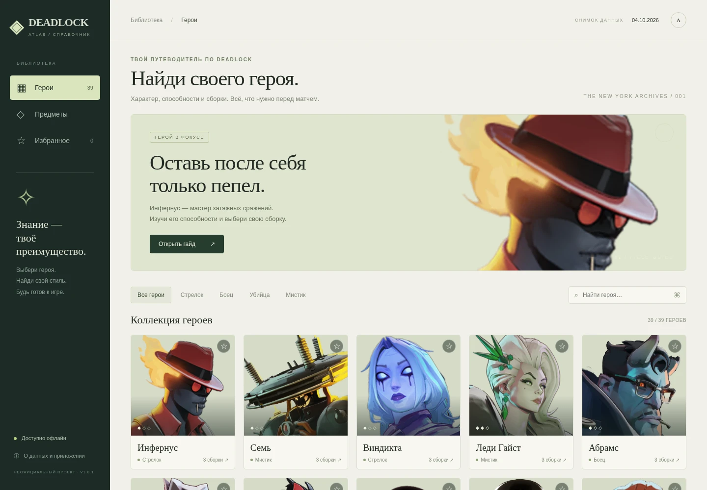

Буся и Крысиный король
Полные профили новых героев: способности с улучшениями, характеристики, предметы и три сборки каждого.
БУСЯмистик · 6 октябряКРЫСИНЫЙ КОРОЛЬбоец · 2 октября
Знакомься с героями. Разбирайся в предметах.
Выбирай сборку — до того, как начнётся бой.

✳героев с описаниями
сборок — по три на героя
предмета в справочнике
доступно офлайн
Патч City Never Sleeps добавил шесть героев — их выпускают
по одному по итогам голосования игроков.
Двое уже в игре и в приложении.
Полные профили новых героев: способности с улучшениями, характеристики, предметы и три сборки каждого.
Две самые популярные за неделю и одна самая свежая. У каждой сборки — ID для копирования, дата, версия и порядок покупок с ценами.
Названия и описания предметов и способностей — официальная русская локализация. Где Valve ещё не перевела, стоит пометка о переводе проекта.
Соломон, Сестра Хэрроу, Дохлый Дэнни и Виолетта выходят 9, 13, 16 и 20 октября — порядок решает голосование.
Не переключайся между десятком вкладок.
Сохрани любимых героев и держи
свой план на матч под рукой.
Игровой стиль, история, способности и базовые характеристики — на русском языке.


+37Три билда на героя: порядок покупок, ситуативные предметы и заметки авторов.
Избранные герои, быстрый поиск и отметки покупок. Настройки сохраняются на твоём компьютере.

На каждого героя — по три сборки сообщества: две самые популярные за неделю и одна самая свежая. Это отправная точка, а не гарантия победы.
Снимок данных — 07.10.2026. Автообновления нет. После патчей сверяй предметы с игрой и адаптируй покупки под матч. Заметки авторов могут быть на английском.
Скачай, запусти и выбери героя.
Без регистрации в приложении и подключения к Steam.
~99 МБ · Windows 10 / 11 · Без установки
Файл без цифровой подписи. Windows может показать предупреждение о неизвестном издателе. Проверяй файл средствами защиты и запускай только если доверяешь источнику.
появится после публикации релиза на GitHubСсылка на скачивание станет доступна после публикации релиза на GitHub.
Открыть страницу релиза ↗Ничего лишнего.
Только ты, игра и справочник.
Скачай Deadlock-Atlas.exe и открой двойным щелчком. Установка и права администратора не нужны. Первый запуск может занять время: приложение распакует встроенные компоненты во временную папку. Оставь около 400 МБ свободного места.
Только для скачивания приложения и открытия внешних ссылок. Герои, сборки, описания и картинки уже внутри. Избранное и отметки хранятся в локальном профиле на компьютере.
Буся (Baba) и Крысиный король (Rat King) — оба уже выпущены и добавлены в приложение целиком: способности, предметы, сборки и русские описания. Остальные четыре героя патча — Соломон, Сестра Хэрроу, Дохлый Дэнни и Виолетта — выйдут 9, 13, 16 и 20 октября; их карточки отмечены в приложении как «скоро». Для полных профилей потребуется следующий снимок данных.
Нет. Это независимый проект Maksim Mishunov. Он не связан с Valve, не подключается к игре и не изменяет её файлы. Deadlock, персонажи и игровые изображения принадлежат их правообладателям.
В версии 1.0.2 нет автоматического обновления. В приложение включён снимок от 07.10.2026. У каждой сборки указана дата её изменения автором. Для новых данных потребуется новая версия приложения.
У этой независимой сборки нет цифровой подписи издателя. Не отключай защиту системы. Проверь файл антивирусом и при необходимости сравни SHA-256 с указанной на сайте суммой. Совпадение суммы подтверждает целостность файла, но само по себе не гарантирует его безопасность.
Из открытого проекта Deadlock API ↗. Сборки — работы игроков; их названия, порядок покупок и примечания сохранены. Авторы сборок и идентификаторы включены в данные приложения.